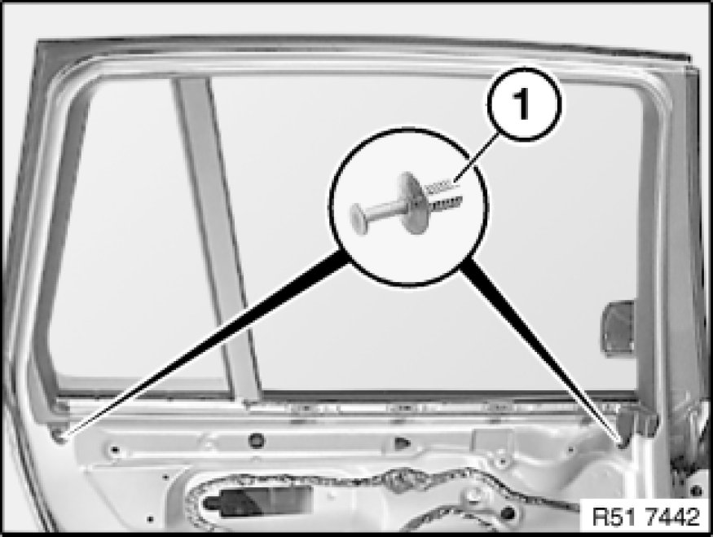
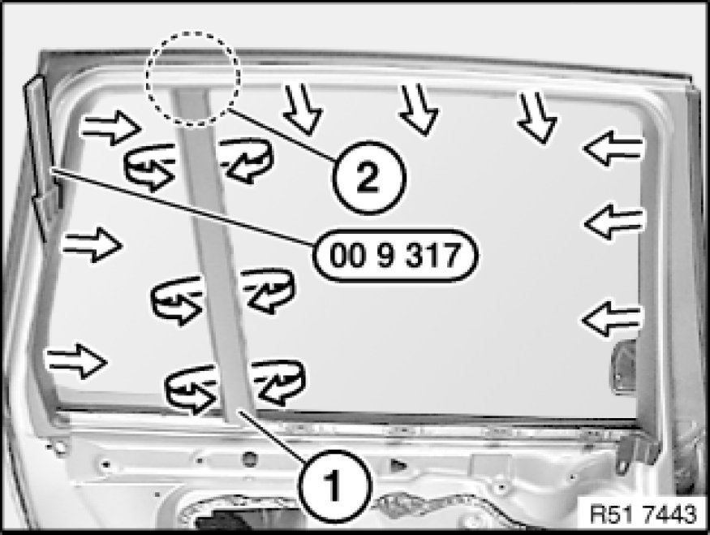
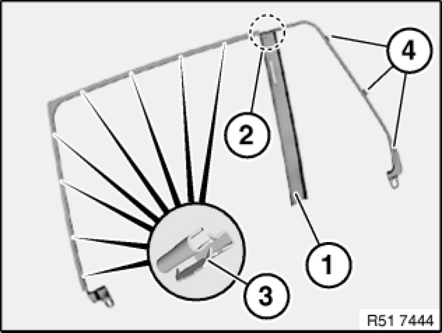

51 34 160 Removing and Installing/Replacing Housing Cover on Inner Left or Right Door Window Frame
51 34 160 - Removing and installing/replacing housing cover on inner left or right door window frame

Special tools required:
- 00 9 317 00 9 317 Trim Panel Wedge

Necessary preliminary tasks:
- Open door window.
- Remove rear door trim panel Removing and Installing Left or Right Rear Door Trim Panel

Release expansion rivets (1).

Lever out fixed cover (1) in area of door window with special tool 00 9 317 00 9 317 Trim Panel Wedge.
Unclip rest of cover (1) in direction of arrow, lever out and remove.
Note:
Do not tear off cover (1) in area (2).

Installation:
Following parts of cover (1) must not be damaged or missing:
2 - Connection point
3 - Clips
4 - Guides